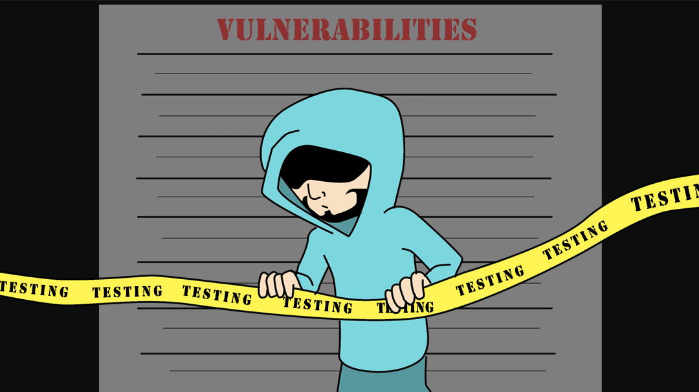

Vulnerabilities in SSL & TLS :- Manually Testing

OpenSSL For Testing
As OpenSSL has improved, it has become more challenging to use one binary for testing the full range of modern to legacy SSL/TLS configurations. The reason for that is following Heartbleed; the OpenSSL developers started a significant overhaul, part of which included the elimination of outmoded cryptography. While this is fantastic news for customers from now on; it means we may need to employ two versions of the OpenSSL binary during our engagements to test for a wide range of conditions: one binary for the new features such as TLS v1.3 and one binary for testing old protocols and Cipher configurations such as when testing if a service supports SSL v2.0.
We can compile out own version of OpenSSL for testing legacy environments. If we start with the OpenSSL 1.0.2g source code, we can make the static binary as follows.
cd /tmp
wget https://openssl.org/source/openssl-1.0.2g.tar.gz
gunzip openssl-1.0.2g.tar.gz
tar -xvf openssl-1.0.2g.tar
cd /tmp/openssl-1.0.2g/
./config --prefix=/opt/openssl-1.0.2g --openssldir=/opt/openssl-1.0.2g no-shared enable-ssl2 enable-ssl3 enable-weak-ssl-ciphers
make depend
make all
We can now test what we have compiled and make sure we are referencing the correct binary for our needs. If we supply the openssl binary with no options, we should be presented with an interactive prompt. To confirm the OpenSSL version, type as follows.
/opt/openssl-1.0.2g/bin/openssl
OpenSSL> version
OpenSSL 1.0.2g 1 Mar 2016
OpenSSL>
We can compare that to my current binary in Kali Linux.
/usr/bin/openssl
OpenSSL> version
OpenSSL 1.1.1l 24 Aug 2021
OpenSSL>
We can see that OpenSSL 1.0.2g was released 1 March 2016, and version 1.1.1l was released 24 August 2021. Using the openssl ciphers syntax, we see more than just a version number,date and release separating these binaries.
Connecting
OpenSSL provides different features and tools for SSL/TLS related operations. We can see a list of these standard commands running the following syntax.
openssl list-standard-commands
As can be seen, the OpenSSL binary provides many different features and tools for operations related to working with the TLS and SSL protocol. One of these tools, the s_client tool, connects, checks, and lists HTTPS and TLS/SSL-related information. We can assess services using SSL or TLS encryption for our customers using this tool. But first, let us look at its basic usage.
We will look at one of the most common uses for using the OpenSSL s_client tool, connecting to a remote TLS/SSL website. We provide it with a target and a port number to do this.
/opt/openssl-1.0.2g/bin/openssl s_client -connect evilsaint.com:443
This command connected to the evilsaint.com web server on port 443, attempted a full TLS/SSL handshake, and then printed out the following information.
- The connection status
- Chain Verification Status 3 The certificate chain the server sent 4 The peer certificate in base64 encoded format 5 Details regarding the rest of the handshake.
As we move on to expanding on this example it might be prudent to talk about the -connect switch. The connect switch can take any TCP IP address or FQDN. If we looked up the IP address for evilsaint it would show as 192.248.151.138. We could replace the evilsaint.com with the resolved IP address and it would still reach out to attempt a handshake with the webserver.
/opt/openssl-1.0.2g/bin/openssl s_client -connect 192.248.151.138:443
What if the IP address we were connecting to hosted multiple websites? If we take a look at the following Apache Web Server configuration example (below), we can see there is run server running on the IP Address 172.20.30.40 and there are two domains ‘www.example.com’ and ‘www.example.org’.
# This is the "main" server running on 172.20.30.40
ServerName server.example.com
DocumentRoot "/www/mainserver"
<VirtualHost 172.20.30.50>
DocumentRoot "/www/example1"
ServerName www.example.com
# Other directives here ...
</VirtualHost>
<VirtualHost 172.20.30.50>
DocumentRoot "/www/example2"
ServerName www.example.org
# Other directives here ...
</VirtualHost>
Just how if you configured virtual hosting with Apache, you would use the domain name to distinguish between multiple websites hosted on the same server. We can do the same with the -servername flag. The -servername flag lets us set the Server Name Indication (SNI) in the ClientHello message to the given value. The -connect switch is used to establish the TCP connection and can be a FQDN or IP address. The -servername is used to specify the domain hostname. If the -servername option is empty then openssl sends the same DNS name as what is used for the -connect option. If an IP is specified for the -connect option and the -servername is not provided then the default behaviour since OpenSSL 1.1.1 is to set SNI is to “localhost”.
Here are two examples demonstrating the same IP address but specifying two different domains.
openssl s_client -servername domain.com -connect X.X.X.X:443
openssl s_client -servername domain2.com -connect X.X.X.X:443
Let us move on and discuss a few more switches that can aid our queries.
- -crlf
- -showcerts
The addition of the -crlf flag. This flag translates line feeds from your terminal into character return & line feeds (CR+LF) that are required by some servers. The -showcerts option can be useful when you need to see all certificates returned from the server.
Let us look at an example
/opt/openssl-1.0.2g/bin/openssl s_client -crlf -showcerts -connect evilsaint.com:443 -servername www.evilsaint.com
Automated Testing
The purpose of this article is to look at ways of manually testing for TLS/SSL weaknesses and so for the most part I want to avoid discussion on popular tools such as testssl, sslyze and sslscan. With that said, after seeing the support for various ciphers and protocols change between versions of the OpenSSL binary versions I am sure there will be those that are interested in how these tools over come this problem and would like to make sure they are testing using a particular version of OpenSSL.
Testssl Testssl is a bash script that is a direct wrapper around the openssl binary. When you start any scan the output will tell you which version of the binary it used to complete its tests. To change the binary that testssl uses we can enter it as an option when running the command.
testssl.sh openssl=/path/to/openssl <URI>
Let us compare the default system binary to our newly compiled one.
testssl --openssl=/opt/openssl-1.0.2g/bin/openssl https://evilsaint.com
testssl https://evilsaint.com
SSLScan If you complete the following on a terminal you will likely find that SSL Scan has been compiled to use the local system binary and there doesn’t appear to be an option for sepcifying the openssl binary.
sslscan --version
All however is not lost. SSL Scan 2 has had a major backend code rewrite which means it is no longer reliant on the version of OpenSSL for many of the checks it performs. Meaning it is possible to support legacy protocols such as SSLv2 and SSLv3 regardless of the version of OpenSSL that is has been compiled against.
SSLyze SSLyze is an nearly all Python code project but similar to other tools it requires access to low-level OpenSSL functionality. In order to satisfy this the author has created an OpenSSL wrapper written in C code which is called nassl. This was specifically developed for SSLyze.
Manually Testing For Vulnerabilities
Check For SSL v2 Support
In addition to the vulnerabilities support for Version 2 of SSL allows it should be noted that in terms of real life practicality, Microsoft has stopped supporting SSL 2.0 in the Windows 10 operating system and IE6 was the last browser that supported SSL version 2 by default. There should be very little reason, if any, to support SSL version 2.0
To check whether SSLv2 is enabled on the remote host, the following command can be used:
/opt/openssl-1.0.2g/bin/openssl s_client -ssl2 -connect evilsaint.com:443
If SSLv2 is supported, the handshake will complete and server certificate information will be returned.
Alternatively to using the OpenSSL command line tool that you can try and use Curl.
curl --sslv2 -I evilsaint.com:443
Check the output, you want to see something similar to the following:
* SSL peer handshake failed
As opposed to
* SSL 2.0 connection using SSL_NULL_WITH_NULL_NULL
Check For SSL v3 Support
To test whether a system supports SSLv3, the following OpenSSL command can be used:
openssl s_client --sslv3 -connect evilsaint.com:443
If SSLv2 is supported, the handshake will complete and server certificate information will be returned.
Alternatively to using the OpenSSL command line tool that you can try and use Curl.
curl --sslv3 -I evilsaint.com:443
Check the output, you want to see something similar to the following:
* SSL peer handshake failed
As opposed to
* SSL 3.0 connection using SSL_NULL_WITH_NULL_NULL
Cipher Suites
openssl s_client -cipher
nmap --script ssl-enum-ciphers -p 443 example.com
Server Certificate
openssl s_client -connect example.com:443 | openssl x509 -noout -text
Secure Renegotiation
The following demonstrates how to verify if a system supports secure renegotiation.
openssl s_client -connect example.com:443
Client Initiated Renegotiation
The following demonstrates how to check if client initiated renegotiation is supported.
openssl s_client -connect example.com:443
Once the connection is established, the server will wait for us to type the next command. We can write the following two lines in order to initiate a renegotiation by specifying R in the second line, followed by enter or return.
openssl s_client -connect host:port
HEAD / HTTP/1.0
R
<Enter or Return key>
TLS Compression
To test whether a server supports TLS compression, and is vulnerable to CRIME, the following method can be used:
openssl s_client -connect example.com:443
For servers that have TLS compression disabled, the response will be similar to the following. The “Compression: NONE” shows that this server rejects usage of TLS-level compression.
HTTP Compression
To test whether a server supports deflate or compression, the following steps can be performed:
openssl s_client -connect example.com:443
Submitting the following will allow us to see if HTTP compression is supported by the server.
GET / HTTP/1.1
Host: example.com
Accept-Encoding: compress, gzip
Change Cipher Spec Injection
A weakness exists in some versions of OpenSSL which can be exploited by intermediary third parties in order to retrieve sensitive information from encrypted communication.
Affected Versions:
• OpenSSL 1.0.1 through 1.0.1g • OpenSSL 1.0.0 through 1.0.0l • all versions before OpenSSL 0.9.8y
Testing requires using publicly available tools, such as the the ‘ssl-ccs-injection’ nmap script by Claudiu Perta, which can be used to test for this vulnerability. This script can be downloaded from https://nmap.org/nsedoc/scripts/ssl-ccs-injection.html.
nmap -p 443 --script ssl-ccs-injection example.com
Heartbeat - TLS Extension
openssl s_client –tlsextdebug